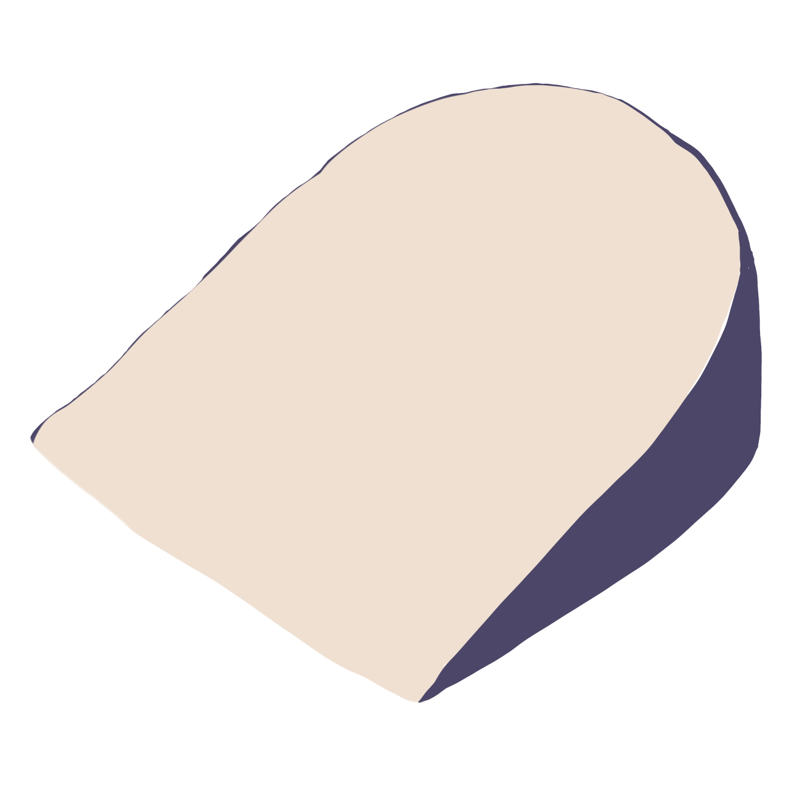

Brie
Double Cream Brie
D'Affinois Double Cream Brie is a luscious and velvety French cheese known for its rich, buttery flavor and smooth, creamy texture. Crafted with precision, this indulgent double cream Brie showcases the perfect balance of mild sweetness and a luxurious melt-in-your-mouth consistency.
Gouda
Midnight Moon
Cypress Grove's Midnight Moon cheese is an exquisite, aged goat cheese with a distinctive ivory hue and a firm, dense texture closely resembling a Gouda. This goat's milk cheese develops a rich, nutty essence with undertones of caramel and brown butter.
Blue
Oregon Blue
Rogue Creamery's iconic Oregon Blue, originating in 1954 as the West Coast's first cave-aged, Roquefort-style blue cheese, remains a classic favorite. Approachable and fruity, it delights with a balanced "blue" character and a subtle touch of sweet honey.